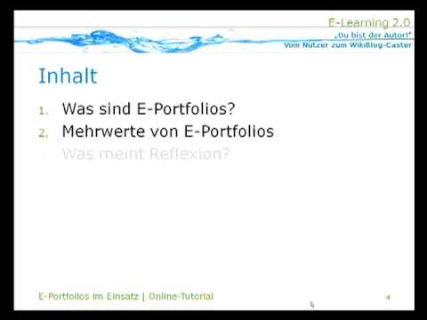
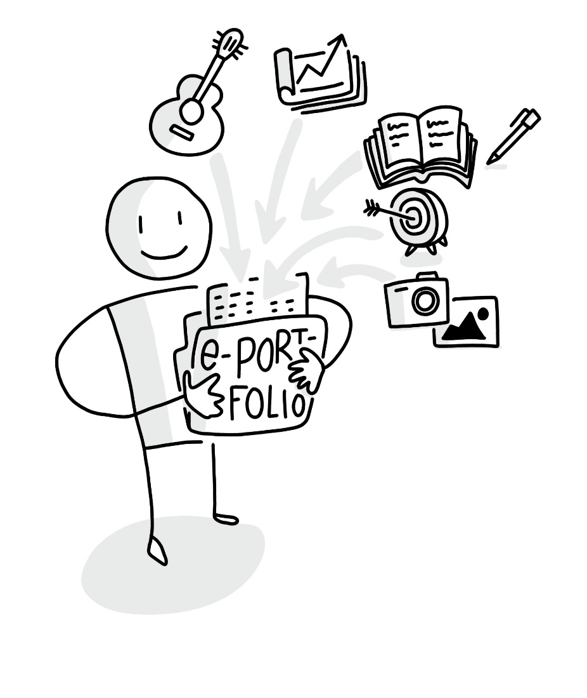
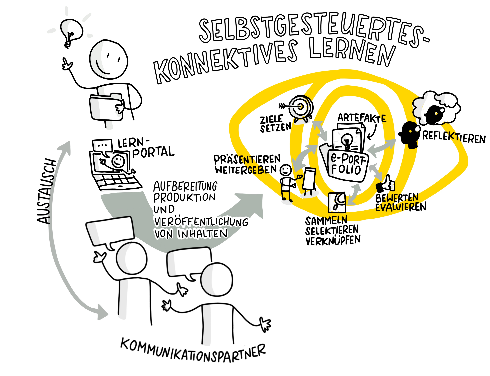

Grundlagen
Zu Beginn: Wenn Du überlegst, ob Du diesen Circle durchführen möchtest, dann schau Dir am besten einmal die nachfolgenden Grundlagen an, die wir für Dich zusammengestellt haben:
- Was steckt eigentlich hinter der Idee eines ePortfolios und welche Mehrwerte kann es bieten?
- Welche Bestandteile hat ein ePortfolio?
- Wie funktioniert das Führen eines ePortfolios?
- Was meint Reflektieren beim ePortfolio?
Anhand der ePortfolio Learning-Methode möchten wir, dass Ihr im Circle gemeinsam an einem von Dir oder Euch selbst gewählten, spannenden Thema arbeitet. Du kannst Dir dazu eine online sichtbare Expertise aufbauen. Außerdem besteht dadurch die Möglichkeit, Dich mit anderen zu diesem Thema zu vernetzen und eine neue Praxis-Community aufzubauen oder Dich einer anzuschließen. Nun schauen wir uns aber erstmal die Basics genauer an.
1. Was steckt eigentlich hinter der Idee eines ePortfolios und welche Mehrwerte kann es bieten?
Die Portfolio-Methode stammt ursprünglich aus dem künstlerischen Bereich, bei der mit Geschick gemachte Arbeiten (= Artefakte) in einer Sammelmappe zusammengestellt werden (portare = tragen und folio = Blatt im Lateinischen). Außerdem bespricht man die Inhalte dieser Mappe mit anderen, um sich im Prozess weiterzuentwickeln und später sogar bewerben zu können. Dies wurde durch den Einzug von digitalen Medien und des Internets auf die elektronische Nutzung übertragen. Dadurch ergeben sich auch mehr Möglichkeiten, ein ePortfolio zu gestalten. Als weiterführenden Einstieg möchten wir Euch gerne ein kleines Online-Tutorial empfehlen, welches Marcel 2009 zu diesem Thema aufbereitet hat: E-Portfolios im Einsatz (Länge ca. 9 min.)

Wer es lieber Schwarz auf Weiß mag, dem können wir ePortfolios kurz und knapp als eine Mischform des Online-Lernens mit Hilfe verschiedener Social Software beschreiben. Diese dient einerseits dazu, sich selbst als Person mit seinen Kompetenzen transparent darzustellen und mit anderen zu vernetzen (= Social Networking). Andererseits erfolgt dies in Kombination damit, seinen Lernprozess und die Ergebnisse mittels digitaler Medien ansprechend zu dokumentieren (= Social Publishing). Dabei wird das Gelernte reflektiert und gezielt zur Diskussion gestellt (vgl. Bernhardt / Kirchner 2007: 82 f. & Kirchner 2015: 32 f.).

Kleiner wissenschaftlicher Exkurs (optional): Wer es detaillierter wissen möchte, dem sei die nachfolgende Einordnung empfohlen (zitiert nach Kirchner 2015: 32ff.):
Die ursprüngliche Einordnung im deutschsprachigen Raum stammt von der Salzburg Research Forschungsgesellschaft "EduMedia":
"E-Portfolio ist eine digitale Sammlung von 'mit Geschick gemachten Arbeiten' (= lat. Artefakte) einer Person, die dadurch das Produkt (Lernergebnisse) und den Prozess (Lernpfad/Wachstum) ihrer Kompetenzentwicklung in einer bestimmten Zeitspanne und für bestimmte Zwecke dokumentieren und veranschaulichen möchte. Die betreffende Person hat die Auswahl der Artefakte selbstständig getroffen, und diese in Bezug auf das Lernziel selbst organisiert. Sie (Er) hat als Eigentümer(in) die komplette Kontrolle darüber, wer, wann und wie viel Information aus dem Portfolio einsehen darf." (Hornung-Prähauser et al. 2007: 14 sowie Hilzensauer/Hornung-Prähauser 2006:4) (-> siehe auch ähnliche Begriffseinordnung auf e-teaching.org
Nach dieser Einordnung waren zunächst immer Produkt und Prozess im Vordergrund, aber die Feedback-Schleife wurde vernachlässigt und die Kompetenzen, die dafür nötig sind, nur angedeutet. Außerdem spricht man metaphorisch auch vom "Schaufenster des eigenen Lernens" (Bräuer 2000: 22, zitiert nach Brunner et al. 2008: 35 sowie Bauer/Baumgartner 2012). Das ist letztlich die technologische, eher tool-orientierte Brille.
Aus pädagogisch-didaktischer Perspektive nähert man sich dem Ganzen aber in seiner Einordnung als (didaktische) Methode des eigenständigen und kompetenzbasierten Lernens, deren Anwendung mit eigener Zielsetzung und Planung anhand verschiedener Prozesse unterstützt wird (u.a. Auswählen, Reflektieren und Präsentieren) und sogar bis zu einem ganzheitlichen institutions-gesteuerten pädagogischen Konzept gehen kann. Das führte in der Vergangenheit dann vermehrt zu Begriffs-Wirrwarr.
Daher wurde versucht, eine integrierende Sichtweise als Methode zu definieren und es mit Social Software zu verknüpfen:
"Demnach ist ein Social-Software-Portfolio eine spezifische Form der webbasierten Selbstdarstellung über ein E-Portfolio. Durch die digitale Aufbereitung der Artefakte werden dem Inhaber zusätzliche mediale Möglichkeiten der Präsentation von Lernprodukten geboten (insbesondere in Form von Audio und Video). Mittels Social Software und insbesondere der Nutzung von Weblogs ermöglicht ein derartiges Portfolio dem Eigentümer außerdem eine fortlaufende Widerspiegelung seiner persönlichen Weiterentwicklung von (Medien-) Kompetenzen und regt damit zur Reflexion im selbstgesteuert-konnektiven Lernprozess an. Dies wird besonders unterstützt, indem es Besuchern Möglichkeiten bietet, ein Feedback über die Inhalte an den Eigentümer zu übermitteln, die sich bei E-Portfolio-Blogs vor allem über die Kommentarfunktion oder die gegenseitige Verlinkung äußern." (Kirchner 2015: 36)
2. Welche Bestandteile hat ein ePortfolio?
Hier gibt es eine Fülle an Möglichkeiten und Werkzeugen, die unterschiedlich einsetzbar sind. Nachfolgend dazu eine Empfehlung aufgrund unserer bisherigen Erfahrung.
Jeder von uns nutzt ja bereits verschiedene Online-Tools, um Inhalte im Netz zu erstellen und sei es nur, dass man eine E-Mail im kleinen Kreis schreibt oder gar eine öffentliche Webseite gestaltet. Dies kann als ein Portal oder Tor ins Internet betrachtet werden. Mit Hilfe dieses persönlichen Lernportals kann die Portfolio-Methode direkt angewendet werden, indem man z.B. einen eigenen Blog führt und ein soziales Netzwerk, wie LinkedIn oder Twitter für die Bereitstellung und Verbreitung seiner Inhalte (= Artefakte) verwendet. Dabei werden im weiteren Sinne Inhalte über Prozesse des Setzens von Zielen, Sammelns, Selektierens, Verknüpfens und Reflektierens erzeugt und schließlich für eine Präsentation, Weitergabe und mögliche Bewertung aufbereitet (vgl. Kirchner 2015: 57 bezugnehmend auf Hilzensauer, Hornung-Prähauser 2006: 5 bzw. Hornung-Prähauser et al. 2007: 15). Im engeren Sinne werden als eine Art "Auge" ins Netz relevante Inhalte aufgenommen und über ein “Schaufenster” z.B. als Blog-Beitrag und Tweet geeignet veröffentlicht (vgl. Kirchner 2015: 57 bezugnehmend auf Bräuer 2000: 22 und Baumgartner / Bauer 2013).
Die nachfolgende Infografik fasst diese Prozesse einmal visuell zusammen:

Nach einem leicht angepassten Modell des selbstgesteuert-konnektiven Lernens mit E-Portfolio-Blogs (Kirchner 2015: 58, Abbildung 11) als Weiterentwicklung in Anlehnung an Bernhardt / Kirchner 2007: 89 und mit Bezug zu Hilzensauer, Hornung-Prähauser 2006: 5
3. Wie funktioniert des Führen eines ePortfolios?
Beim Einsatz eines ePortfolios und Anwenden der zugehörigen Methode werden im Wesentlichen die folgenden Prozesse ausgeführt, die bereits oben kurz erwähnt wurden (vgl. Hornung-Prähauser et al. 2007: 15):
- Ziele setzen, um die Vorgehensweise und Rahmenbedingungen beim Führen des ePortfolios zu klären.
- Sammeln, Selektieren und Verknüpfen der Inhalte, um den Kompetenzaufbau im Lernprozess zu dokumentieren.
- Reflektieren im ePortfolio, um die eigene Leistung kritisch zu hinterfragen und das Lernziel zu analysieren.
- Präsentieren und Weitergeben der Ergebnisse an Dritte, um den Kompetenzaufbau sichtbar werden zu lassen.
- Bewerten und Evaluieren des ePortfolios, um den Kompetenzaufbau ganzheitlich beurteilen zu können (optional).
4. Was meint Reflektieren beim ePortfolio genauer?
Dazu empfehlen wir die [ersten 2 Minuten]{.underline} des zweiten Online.Tutorials von Marcel:
E-Portfolios im Einsatz - Teil 2 (Gesamtlänge ca. 8 min.)

Typische Orientierungsfragen, die man sich zum Reflektieren immer wieder stellt und als Antworten im ePortfolio festgehalten werden sollten, sind: - "Was habe ich bisher gelernt?" - "Wo stehe ich heute?" - "Was sollen meine nächsten Schritte sein?" (Atwell 2007, Hornung-Prähauser et al. 2007)
Nun habt Ihr alle wichtigen Basis-Informationen zum Lernen mit ePortfolios erhalten und könnt beim Lernpfad direkt weiter durchstarten.
Quellen
1) Attwell, Graham (2007): E-Portfolio Entwicklung und Verwendung [Video-Quelle]. Ins Deutsche übersetzt von der Salzburg Research Forschungsgesellschaft. http://blip.tv/pontydysgu/e-portfolio-entwicklung-und-verwendung-416096 [letzter möglicher Zugriff am 19.10.2013]. Verfügbarer alternativer Inhalt auf Slideshare: https://de.slideshare.net/GrahamAttwell/eportfolio-development-and-implementation [Abruf am 12.10.2020] 2) Bauer, R. / Baumgartner, P. (2012): Schaufenster des Lernens: Eine Sammlung von Mustern zur Arbeit mit E-Portfolios. Münster: Waxmann Verlag. 3) Baumgartner, P. / Bauer, R. (2012): Didaktische Szenarien mit E-Portfolios gestalten: Mustersammlung statt Leitfaden. In: Csanyi, G. / Reichl, F. / Steiner, A. (Hrsg.): Digitale Medien - Werkzeuge für exzellente Forschung und Lehre. Medien in der Wissenschaft, Band 61, S. 383-392. Münster: Waxmann. 4) Baumgartner, P. / Zauchner, S. / Bauer, R. (Hrsg.) (2009): The Potential of E-Portfolios in Higher Education. Innsbruck/Wien/Bozen: StudienVerlag. 5) Bernhardt, Thomas / Kirchner, Marcel (2007): E-Learning 2.0 im Einsatz - "Du bist der Autor!" - Vom Nutzer zum WikiBlog-Caster. vwh-Verlag, Boizenburg. 6) Bräuer, Gerd (2000): Schreiben als reflexive Praxis: Tagebuch, Arbeitsjournal, Portfolio. Freiburg im Breisgau: Fillibach-Verlag. 7) Brunner, I. / Häcker, T. / Winter, F. (Hrsg.) (2008): Das Handbuch Portfolioarbeit (2. Auflage). 1. Auflage 2006. Seelze-Velber: Kallmeyer. 8) Hilzensauer, W. / Hornung-Prähauser, V. (2006): ePortfolio - Methode und Werkzeug für kompetenzorientiertes Lernen. Salzburg Research Forschungsgesellschaft m.b.H. - EduMedia [PDF]. Online verfügbar unter: http://edumedia.salzburgresearch.at/ images/stories/EduMedia/Inhalte/eportfolio_srfg.pdf (letzter möglicher Abruf am 03.12.2012). Alternativer Link unter: https://docplayer.org/16445308-Eportfolio-methode-und-werkzeug-fuer-kompetenzbasiertes-lernen.html [Abruf am 12.10.2020] 9) Hornung-Prähauser, V., Geser, G., Hilzensauer, W., Schaffert, S. (2007): Didaktische, organisatorische und technologische Grundlagen von E-Portfolios und Analyse internationaler Beispiele und Erfahrungen mit E-Portfolio-Implementierungen an Hochschulen. Salzburg: Salzburg Research Forschungsgesellschaft und fnm-austria. Online verfügbar als PDF unter: http://www.fnm-austria.at/projekte/ePortfolio/Dateiablage/view/fnm-austria_ePortfolio_Studie_SRFG.pdf [letzter möglicher Abruf am 15.02.2013]. Alternativer Link unter: https://www.yumpu.com/de/document/view/32927444/didaktische-organisatorische-und-technologische-grundlagen-von- [Abruf am 12.10.2020] 10) Kirchner, Marcel (2015): Social-Software-Portfolios im Einsatz - Zwischen Online-Lernen und Medienkompetenz im selbstgesteuert-konnektiven Lernalltag. vwh-Verlag, Boizenburg.